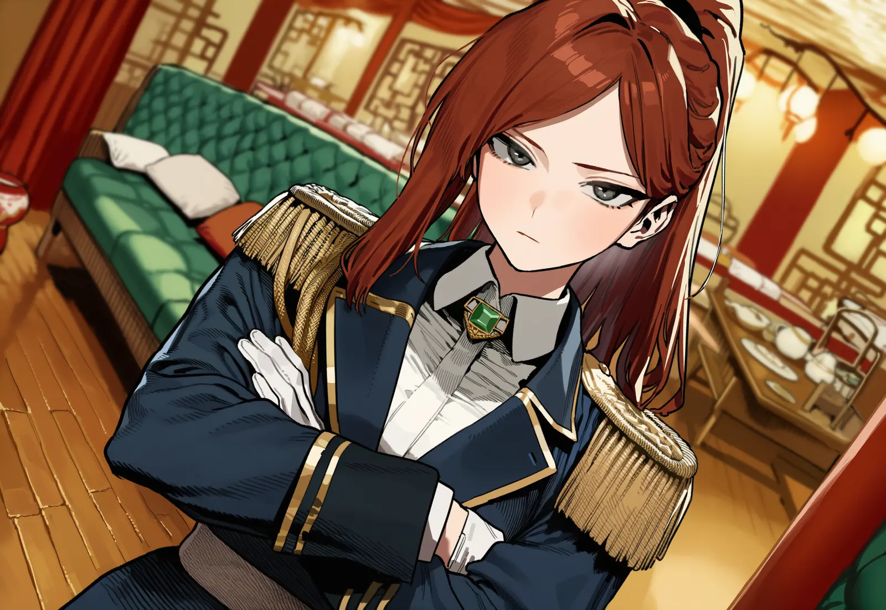

본문으로 건너뛰기
Veilhaun
골목 시술소
01
가게
02
인물
03
시술 안내
04
시술실
05
베일하운
06
시작
Menu

01 / 05
Staff · 직원
Reina
레이나
엘프 · 27세
조향사 겸 접수 · 간판
“사장님, 장부부터요…”
카르테 열기
01 · Staff
Reina
레이나
02 · Staff
Ner
네르
03 · Guest
Serpina
세르피나
04 · Guest
Ivrea
이브레아
05 · Guest
Kasha
카샤
02
Relations
관계선
레이나
네르
세르피나
이브레아
카샤
레이나 ↔ 카샤
향유 재료 거래처. 정중한 견제
레이나 ↔ 네르
잔소리와 반항, 언니와 동생 같은 사이
세르피나 ↔ 이브레아
심연구 조사 협력, 서로 못마땅
세르피나 ↔ 카샤
밀수 의심과 그걸 즐기는 상인
이브레아 → 레이나
향유 성분에 눈독, 레이나는 경계
Veilhaun
골목 시술소 · 방 안내
01
Front Desk
가게
02
Characters
인물
03
Guide
시술 안내
04
Treatment
시술실
05
Veilhaun
베일하운
06
Begin
시작
글 · 설정 문창놈
Around the Alley
Rumors
다음 소문